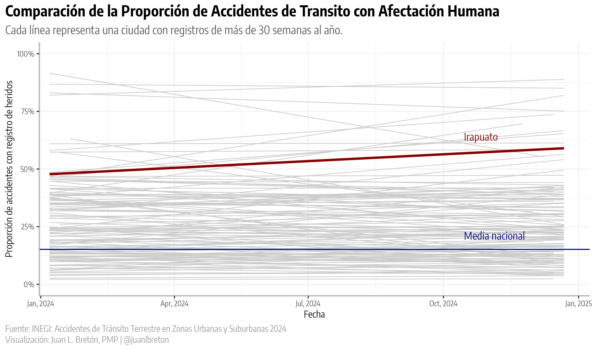
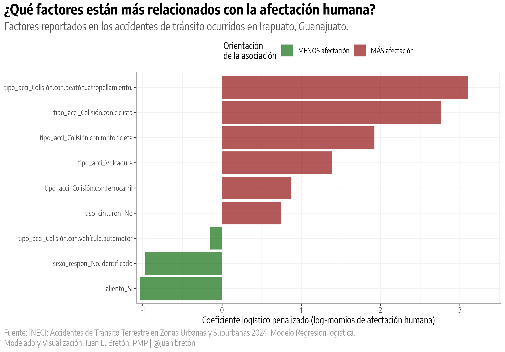
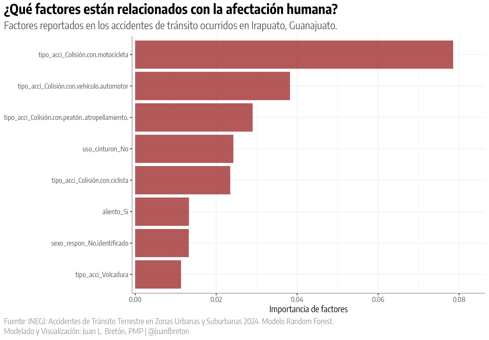
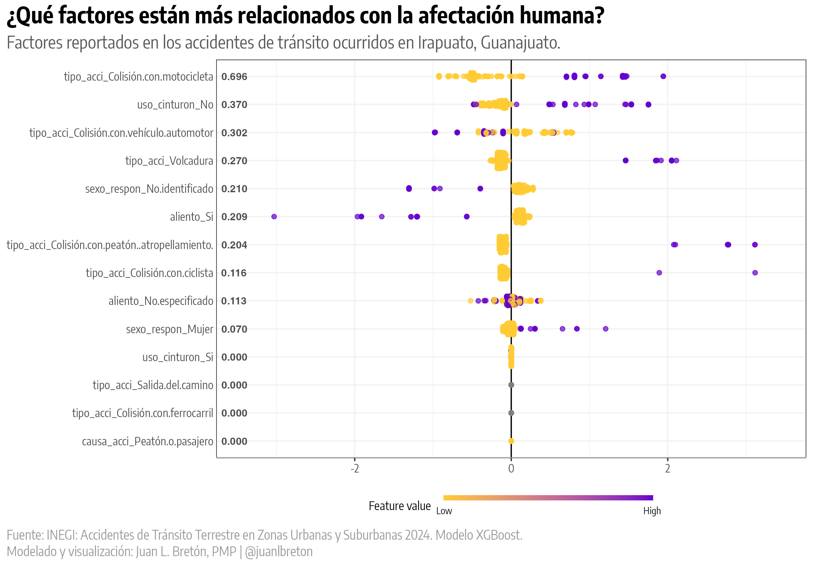

INEGI · ATUS 2024 · Irapuato
En Irapuato, más de la mitad de los accidentes registrados dejaron personas lesionadas o fallecidas
La proporción destaca frente a otros municipios. El dato justifica investigar dónde y en qué circunstancias ocurre la afectación, antes de elegir una intervención.
Una señal que merece atención
De los 852 accidentes registrados en Irapuato durante 2024, 447 tuvieron al menos una persona lesionada o fallecida. Eso equivale a 52.5%. La proporción fue mayor que la observada en 179 de los otros 197 municipios presentes en el archivo analizado.
La decisión que importa
¿Qué zona y qué tipo de accidente conviene investigar primero?
La proporción municipal ayuda a formular la pregunta. Para responderla hacen falta localización, volumen de eventos, condiciones de circulación y una revisión del registro.
La brecha con el resto del conjunto es amplia
En los demás municipios del archivo, 41,040 de 272,838 accidentes tuvieron afectación humana: 15.0%. La diferencia frente a Irapuato es de 37.4 puntos porcentuales. Es una comparación entre accidentes registrados, no una estimación del riesgo de sufrir un accidente por viaje o por kilómetro recorrido.
| Ámbito | Accidentes | Con afectación humana | Proporción |
|---|---|---|---|
| Irapuato | 852 | 447 | 52.5 % |
| Otros municipios del archivo | 272,838 | 41,040 | 15.0 % |
Cálculo propio. “Afectación humana” indica al menos una persona lesionada o fallecida en el accidente. Los 197 municipios son los presentes en el registro, no un censo de todos los municipios del país.

1. COMPOSICIÓN DE ACCIDENTES (mix diferente): • Más colisiones con objetos fijos: +16.5 pp • Más colisiones con motocicletas: +14.2 pp • Más volcaduras: +6.1 pp • Menos colisiones auto-auto: -38.3 pp 2. SEVERIDAD POR TIPO (mucho peor en Irapuato): • Colisión con ciclista: 96.2% vs 48.8% (+47.4 pp) • Colisión con motocicleta: 82.9% vs 36.3% (+46.6 pp) • Volcadura: 75.0% vs 42.3% (+32.7 pp) • Colisión con objeto fijo: 28.2% vs 9.5% (+18.7 pp) • Colisión auto-auto: 26.5% vs 5.7% (+20.8 pp) 3. FACTORES DE COMPORTAMIENTO: • No uso de cinturón: 21.0% vs 8.2% (+12.8 pp) • Consumo de alcohol: 7.3% vs 3.3% (+4.0 pp) • Alta tasa de "No especificado" en alcohol: 53.9% vs 28.8% 4. PATRONES TEMPORALES: • Alta severidad CONSISTENTE en todos los días • Jueves peor: 57.8% vs 14.6% nacional • Lunes también crítico: 57.4% vs 14.5% • Todas las horas del día son problemáticas • Tarde (12-18h) especialmente grave: 56.2% vs 13.6%
La mezcla de tipos de accidente, la exposición al tránsito y las prácticas de registro pueden influir en la comparación.
El mapa ayuda a acotar la investigación
La distribución espacial permite identificar agrupaciones de accidentes registrados y comparar sus características. Una concentración de puntos señala dónde mirar con más detalle; por sí sola no mide la probabilidad de accidente de quienes transitan por esa zona.
Las agrupaciones no son iguales
La tabla resume número de accidentes, tipo más común, horario, día y consecuencias en cada agrupación. Es útil para seleccionar una zona candidata y plantear una inspección de campo. Los grupos pequeños requieren especial cautela.
El tipo de accidente ayuda a entender la señal
La composición local difiere de la del resto del archivo. En Irapuato, las colisiones con motocicleta representan 240 de 852 registros, y 199 de ellas tuvieron afectación humana. Incluso dentro de tipos compartidos, la proporción local fue mayor: 82.9% frente a 36.3% en colisiones con motocicleta, y 26.5% frente a 5.7% en colisiones entre vehículos automotores.
Lectura de estas diferencias. La composición de los accidentes podría contribuir a la brecha, pero no la agota. También pueden intervenir diferencias de circulación, exposición y documentación. Velocidad e infraestructura son hipótesis para comprobar en campo; este archivo no permite atribuirles la diferencia observada.
Los modelos aportan pistas, con límites
Las tres figuras muestran qué variables resultaron relevantes para clasificar si hubo afectación entre los accidentes registrados de Irapuato. Importancia predictiva, coeficiente y proporción observada no son la misma medida. Los resultados no estiman el efecto de cambiar una condición vial o una conducta.
Regresión logística

Random forest

XGBoost y valores SHAP

En particular, el campo de aliento alcohólico tiene muchos casos “No especificado” en el análisis original. Ningún signo de una gráfica permite concluir que el alcohol proteja frente a lesiones.
De una señal a una decisión defendible
El dato de 52.5% justifica profundizar el diagnóstico de seguridad vial en Irapuato. La primera decisión útil es seleccionar una zona y un tipo de accidente para investigar, con criterios explícitos de volumen, afectación humana y calidad del registro.
- Contrastar la concentración con exposición. Revisar flujo de vehículos y personas, tipo de vía y horarios en las zonas candidatas.
- Auditar el registro. Comparar criterios de captura, faltantes y georreferenciación antes de atribuir diferencias a las condiciones viales.
- Inspeccionar la zona seleccionada. Documentar velocidades, cruces, visibilidad, infraestructura y conflictos entre modos de transporte.
- Definir una intervención y su evaluación. Elegir medidas solo después del diagnóstico y establecer cómo se comprobará si cambian los resultados.
Idea para llevar
Priorizar exige combinar frecuencia, consecuencias y calidad de la evidencia.
El patrón identifica una pregunta urgente para Irapuato. La respuesta operativa necesita una comprobación territorial y una medida de exposición.
Alcance y fuentes
Las cifras de este reporte se calcularon con el registro derivado de
ATUS 2024 de INEGI. Cada fila corresponde a un accidente en ese conjunto. Se agruparon las claves de entidad y
municipio. La variable afecta_humana se contó cuando vale 1, lo
que indica el registro de, al menos, una persona herida o fallecida. La
comparación de 179 municipios usa proporciones sin umbral mínimo de accidentes, por lo que algunos municipios
pueden tener estimaciones inestables.
ATUS reúne accidentes reportados por autoridades en zonas urbanas y suburbanas. La cobertura, el reporte de eventos sin lesionados y la georreferenciación pueden variar. Este análisis no contiene un denominador de viajes, personas o kilómetros recorridos, ni identifica la causa de cada diferencia municipal. Las figuras de modelos se muestran tal como existen en el proyecto y deben tratarse como exploratorias.
Fuentes: INEGI, programa ATUS;